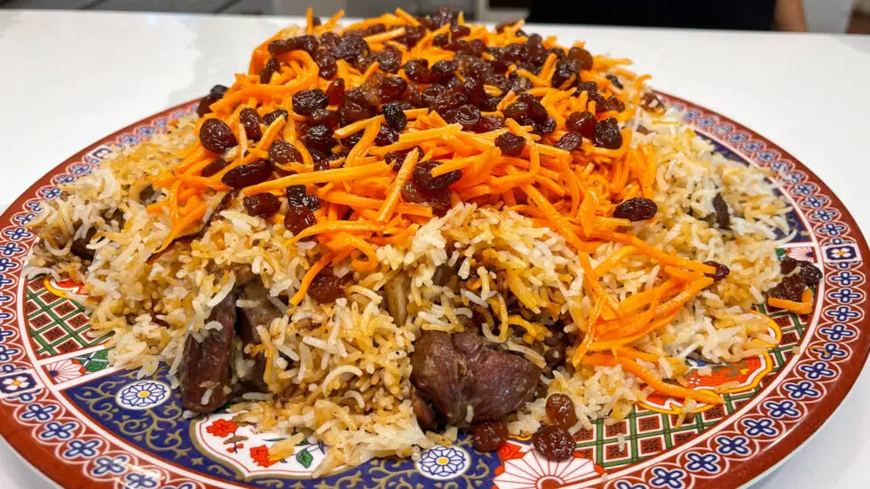

Kabuli Pulao Recipe

Kabuli palaw is considered a festive and important dish due to the price and quality of the ingredients as well as its tradition of being Afghanistan’s national cuisine. The dish is traditionally placed in the center of the meal with other foods making up the rest of the perimeter.
Ingredients
- 2–4 tbs char masala (recipe here)
- 2 teaspoons cumin seeds
- 1.5 lb lamb
- 350 grams julienned carrots
- 250 grams of raisins
- 1/4 C sesame oil
- 2 sliced onions
- 4 chopped garlic cloves
- salt
- 2 Tablespoons of sugar
- 3 Cups Rice
Steps
- Rinse your rice. You want to make sure the water runs clear. This cloud water is the starch you that don’t want. Makes for sticky rice. (Good for other dishes, not this one) Let the rice soak.
- Next, we are going to prepare the lamb. Break out your instapot, pressure cooker, or regular pot. Add your sesame oil and heat. Add your onions. Add your roughly cut garlic. Cook for 30 seconds and then add cumin.
- Next we will add our lamb. Then add tablespoon of salt. Finally, add 3 Cups of water. I cook in my instapot for 25 minutes on high pressure. If you cook in a regular pot it will probably take about an hour. You want the meat to be fork tender.
- While your meat is cooking, next cook your carrots and raisins. Add to pan some vegetable oil. Then, add your shredded carrots. This will not take long, cook until soft. Place on your foil.
- Next, your raisins. I soak mine in hot water for about 5 minutes. Then, you will drain and add to the same pan you cooked the carrots in. This will go quick. Only cook for about 30 seconds. Then add them to the foil with your carrots and wrap into your foil packet to add to rice later.
- Boil a large pot of salted water. Take your rice that you have rinsed and soaked and add to the boiling water. This is a step you have to watch. I can’t give you an exact amount of time to cook the rice. But, you are only partially cooking your rice. If you fully cook it you will have mushy pulao. On average 4 minutes should get you there. If you can break the rice in your finger you are done. Then, drain your rice.
- Next, we are going to make our sugar solution to add a caramel color to our rice. In a pan add quarter cup of vegetable oil. Add your sugar. Let the sugar darken. Add 1/2 Cup of water, set aside.
- Take your meat out of the broth when done cooking. Now it is time to assemble everything. Take a big pot and add half of your rice to the bottom. Then, add your lamb. Then add last of the rice. After that, use a few scoops of the lamb broth, add the sugar mixture, and char masala.
-
Poke some holes in the rice with the handle of a spoon. This will allow steam to release better. Take your packet of raisins and carrots and place in pan on top of your rice. I cover mine with more foil then put lid on rice.
Cook on stove top on medium-low heat for about 25 minutes.
Home